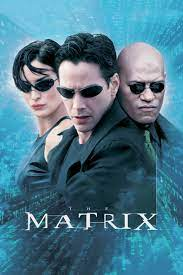
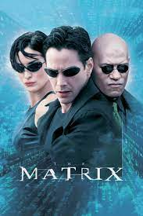
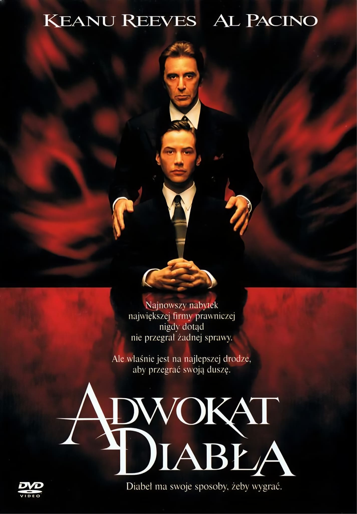
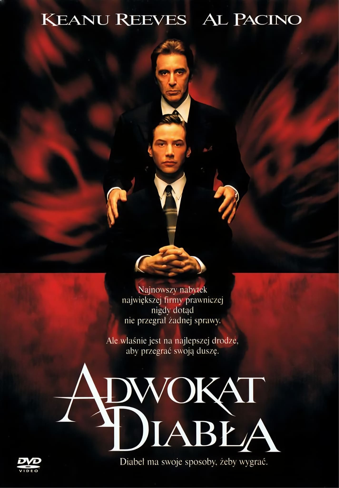

Keanu Charles Reeves
Kanadyjski artysta i przedsiębiorca: aktor, reżyser, producent filmowy, muzyk i filantrop.
Urodzony 2 września 1964 w Bejrucie w Libanie
Występował w seriach filmowych, takich jak: Matrix oraz John Wick.
Uważany za jednego z najlepszych aktorów na świecie
Filmografia
Aktor najbardziej kojażony jest ze swoich ról w filmach z serii Matrix oraz John Wick.
Top 3 najwyżej oceniane role w filmach:
1. Neo w filmie Matrix z 1999 roku.


2. John Wick w filmie John Wick 3 z 2019 roku.
3. Kevin Lomax w filmie Adwokat Diabła z 1997 roku

